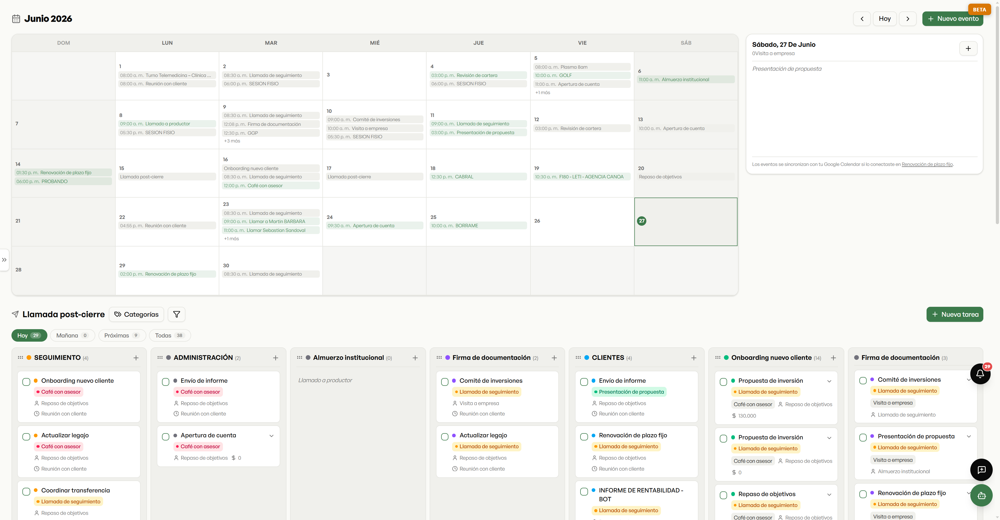
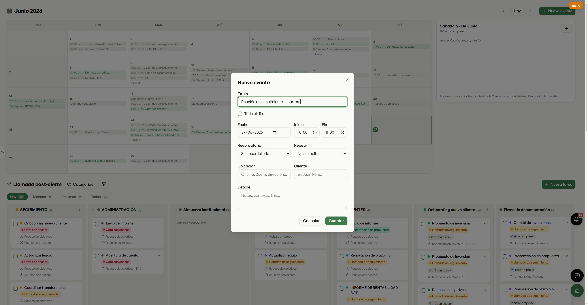
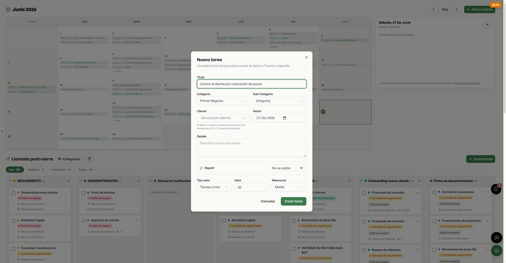
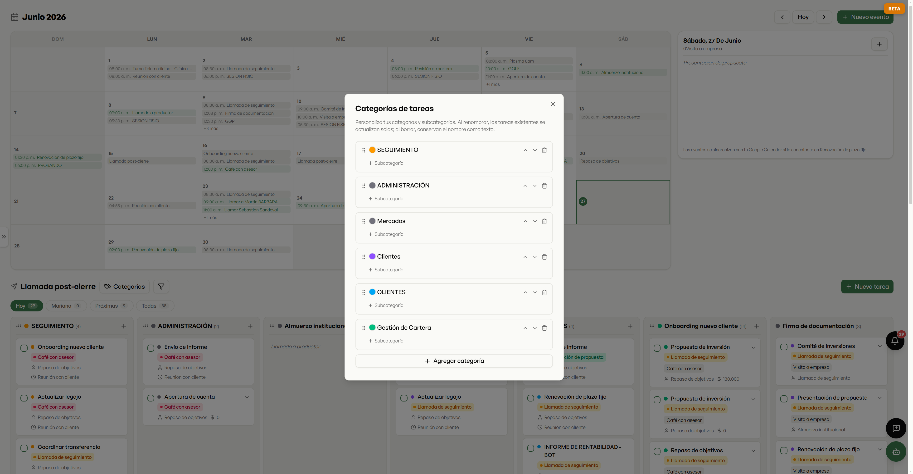

La agenda y las tareas del productor, en un solo lugar — y sincronizadas con su Google Calendar, de los dos lados.

Todos sus eventos del mes a la vista, y sincronizados con su Google Calendar de los dos lados: lo que agenda acá aparece allá, y lo que agenda allá aparece acá. Una herramienta que vive dentro del día del productor, no aparte.

Al crear un evento elige recordatorio (de 5 minutos a 1 día antes), repetición (diaria, hábiles, días puntuales), ubicación y —clave— lo asocia a un cliente. La agenda y la ficha del cliente, hablando entre sí.
Las tareas en un tablero tipo kanban, agrupadas por categoría y filtrables por cuándo vencen — hoy, mañana, próximas. Cada tarjeta es un llamado, un seguimiento, una firma. Así no se le escapa nada.

Cada tarea lleva categoría, relevancia y, si la asocia a un cliente, aparece automáticamente en los Pendientes de ese cliente — dentro de su ficha 360° y del Conversation Center. La agenda deja de ser una isla.

Cada productor arma sus propias categorías y subcategorías de tareas. Al renombrar, las tareas existentes se actualizan solas. La herramienta se adapta a cómo trabaja cada uno, no al revés.
Calendario y tareas, sincronizados con Google y conectados con cada cliente — para que nada se caiga entre mil cosas.